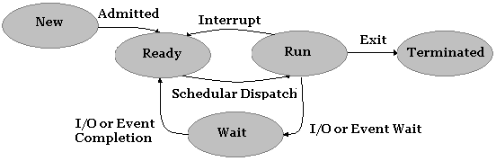
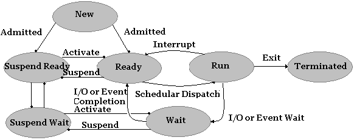
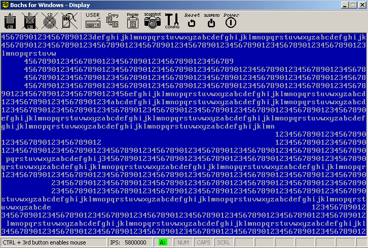
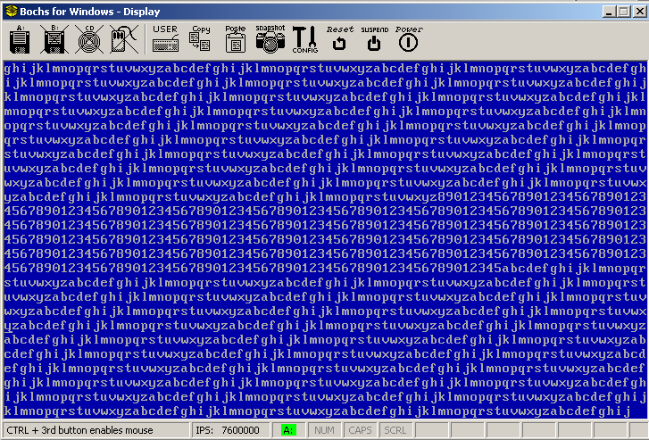

| Operating Systems Development Series |
|
1.はじめに
ようこそ
前章では、プロセス間通信（IPC）、保護、リソース割り当て、プロセス制御ブロック（PCB）、プロセス実行状態、プロセスアドレス空間など、プロセス管理の基本的なトピックについて詳しく説明しました。また、シングルタスクのサポートと基本的なシングルタスクの実装についても詳しく説明しました。本章では、前章の続きとして、マルチタスク、スケジューリング、セキュリティ、相互排他に重点を置いて、それぞれのトピックをより詳細に説明します。特に、以下の項目について説明します。
-
-
マルチスレッド
-
-
マルチタスクで
-
-
InitとIdleのプロセス。
-
-
カーネル/ユーザー共有データスペース。
-
-
相互排他とセマフォ。
-
-
並行プログラミング入門
-
-
スケジューリングアルゴリズム。
-
-
MPスタンダードへの導入。
この章では、前の章を読んでいることを前提に、より高度な、実際の設計と実装に焦点を当てます。前章と同様、まずこれらのトピックの背後にある理論に飛び込み、その後、ユーザランドプロセスに完全なマルチスレッドを実装するデモを紹介します。また、MP
規格については簡単な紹介にとどめ、後日、より詳しく取り上げる予定です。MP
サポートを実装するには、APIC を適切にサポートする必要がありますが、これは高度なトピックです。
2.プロセス状態の管理
プロセスについては、シリーズを通してすでに多くのことを話してきましたので、今回はプロセスの状態とプロセスの作成についての復習にとどめます。前章では、プロセスを作成するための関数を実装しました。このデモでは、この関数を修正して、プロセスを適切に実行するための新しいタスクを作成する予定です。状態管理はプロセスのスケジューリングと密接に関係しているため、状態管理について復習しておく必要があります。
プロセスの状態とは、そのプロセスで採用されている現在の活動のことです。最低限、プロセスは、作成、実行、実行準備、終了が可能である。すでに、これによって4つの状態が考えられる。
-
-
新しいプロセスを作成中です。
-
-
実行中です。プロセスが実行されています。
-
-
準備完了プロセスの実行準備が整いました。
-
-
終了しました。プロセスが終了しました。
これは良いスタートです。
しかし、私たちはこれよりもっと良いことができるのです。例えば、あるプロセスを走らせていて、そのプロセスがディスクから大きなファイルを読み込む要求を出したとしよう。しかし、複数のプロセスが存在するシステムでは、ディスクはそのプロセスからの要求の処理で忙しいかもしれません。この場合、プロセスは入出力要求が完了するまで待つ必要がある。別の例として、2つのプロセスがあり、それらはシグナルを通じて互いに通信しているとしよう。これは、5番目の状態である。
すべてを合わせると、プロセスは次のような状態を経ることになる。


上図は、現在の状態モデルを示している。新しいプロセスはシステムのReadyキューに
入れられ、Schedulerディスパッチャが実行するプロセスを選択すると、そのプロセスはRun状態になる。ここから、プロセスは任意の数の状態変化を取ることができる。割り込みや
例外が発生した場合、Scheduler Dispatcherは
他のプロセスに切り替える必要があり、この場合、プロセスは Readyキューに戻されます。 代わりに、プロセスがファイルから読み込もうとすると、プロセスは I/Oリクエストを開始
し、
リクエストが完了するまで Waitキューに置かれます。I/O 要求が完了すると、プロセスはReadyキューに戻され、再びSchedulerディスパッチャによって
選択 される。最後に、プロセスの実行中いつでも、プロセスは終了される。
時には 、プロセスを一時停止することが有効な 場合があります。これは、プロセスをメモリから取り出して、その状態をディスクに保存することです。これは特に、システムリソースを解放し、より高い優先度を持つ他のプロセスを実行できるようにする場合に有効です。これには、最低でもあと2つの状態が必要です。
-
- Suspend Ready.
-
-
Suspend Wait.
これらを先ほどの図に加えると、次のようになります。

のプロセス レディ
または 待つ
かもしれません 停止中
は、システムのリソース需要に応じて変化します。設計の必要性に応じて、これにさらに多くの状態を追加することができますが、ほとんどの汎用オペレーティングシステムでは、上記の状態図があれば十分です。
ここでは、Ready、Run、 Terminatedの各状態にのみ 注目することにする。しかし 、添付のデモでスリープ機能を適切にサポート するために、Wait状態も実装 することがあります。
3.並行プログラミング
この章では、プロセスの状態、状態管理、プロセス生成について説明しました。最後に、マルチタスクについて説明します。 マルチタスクの中心は、次のセクションで説明するスケジューラ・ディスパッチャです。Scheduler
ディスパッチャは、プロセスを状態間で移動させたり、実行するプロセスをスケジュールする役割を担っています。そのため、このセクションで最初に取り上げることにしました。この後、このセクションで使用することになります。しかし、スケジューラに移る前に、複数のスレッドが実行されたときにマルチタスクで何が起こるかを詳しく見ておく必要があります。
2つのスレッドまたはプロセスが同時に実行され、互いにデータを共有すると、実行の2つのスレッド間の活動を同期させることが重要になります。
並行処理とは、プロセスの現在の状態がわからないことを意味します。複数のプロセスが並んで実行され、互いにデータを共有するとき、そのプロセスは並行して実行されているといいます。並行プログラミングは、並行プロセスまたはスレッド間の共有リソースへのアクセスを同期するために使用される一連の技術を定義しています。
クリティカルセクションプロブレム
シングルコアのシステムでは、オペレーティングシステムは各プロセスにわずかな実行時間を割り当てる。システムは、同時に実行されている異なるプロセス間を高速に切り替えます。プロセスはいつでも中断される可能性がある。また、並列実行をサポートするシステムでは、異なるプロセスからの命令を同時に実行することができる。
現在のプログラミングの問題点を見るために、次のような命令を持つ2つの処理を考えてみよう。
Process A
mov eax, [count]
inc eax
mov [count], eax
|
Process B
mov ebx, [count]
dec ebx
mov [count], ebx
|
これらのプロセスを同時に実行する場合、スケジューラが2つのプロセスを切り替えるときに、何らかの順序でプロセスをインターリーブすることになる。 プロセスのインターリーブの方法はさまざまだが、その1つは次のようなものだ。
mov eax, [count]
inc eax
mov ebx, [count]
dec ebx
mov [count], eax
mov [count], ebx
もし、countが2つの異なるプロセス間で共有されるなら、ここで大きな問題に気がつくかもしれません。なぜなら、実行順序を制御できないので、スケジューラが2つのプロセスをいつ切り替えるかによって、異なる結果が得られる可能性があり、countの値が有効であることを保証することができないからです。どちらが先に変数を読み書きするかで結果が変わります。これはレースコンディションです。
レースコンディションに対抗するためには、変数が他のプロセスで使用されている間、その変数をガードする必要があります。何らかの方法で2つのプロセスを同期させる必要があります。これはクリティカルセクション問題の一部である。
複数のプロセッサを持つシステムでは、1つのプロセスを実行する際に、現在の実行状態と現在の命令ストリームがインターリーブされるため、問題はさらに深刻になります。
問題点
同時に実行されるプロセスの同期を制御する方法が必要です。クリティカルセクションの要求があったとき、それが完了するまで、1つのプロセッサだけがクリティカルセクション内のコードを実行することを保証しなければならない。さらに言えば、クリティカルセクションに入る間、他のプロセスやスレッドが実行されないようにしなければならない。
その基準
-
-
相互排他。あるプロセスがクリティカルセクションで実行されているとき、他のプロセスはクリティカルセクションで実行されていない。
-
-
進行状況。プロセスは、そのクリティカルセクションに入るのを無制限に待つわけではありません。
-
-
Bounded Waiting（境界付き待機）。そのクリティカルセクションに入る要求を出してから、実際に入るまでの時間が有限であること。
セマフォ
相互排除をどのように実行するのか？2つのプロセス間で何らかの協力が必要です。プロセスAが共有リソース上で動作しているとき、プロセスBがそのリソースにアクセスする必要がある場合、プロセスBは待機する必要があります。しかし、プロセスAがそのリソースを使い終わったら、プロセスBがそのリソースを使えるようになることを通知する必要があります。これが相互排他です。
できることは、リソースが現在使用されているかどうかを追跡するために、別の変数を導入することです。この変数をロックと呼びます。そして、このロックを使って、もうひとつのリソースを追跡することができます。
-
-
ロックが1の場合、そのリソースは他のプロセスによって使用中である。
-
-
ロックが 0 の場合、リソースは自由に使用できる。
このタイプのロックには特別な名前がついています。これはミューテックスと呼ばれます。ミューテックスは2つの値しか持たないので、バイナリ・セマフォとも呼ばれます。 私たちが何をする必要があるかを思い出してください。一方のプロセスが待機し、もう一方のプロセスがシグナルを送る必要があります。これらは、この章を通じて使用する基本的な関数です。
atomic Wait (Semaphore S) {
while (S <= 0)
Place process on S.Queue and block.
S--;
}
atomic Signal (Semaphore S) {
S++;
}
ミューテックスは、値が0か1しかない2値のセマフォに 過ぎません。セマフォは一般化されたロックであり、制限はありません（つまり、ミューテックスが2つの値しか持たないのに対し、一般的なセマフォには制限がありません）。また、上記のコードにあるatomicキーワードに注目してください。これは、このコードが実行されるときに決して中断されないことを意味しています。つまり、1つのプロセッサ上で1ブロックのコードとして正しい順序で実行されることが保証されているのです。これらは1つのユニットとして扱われます(それゆえアトミック操作と呼ばれます)。
残念ながら、上に示したような単純なものではありません。アトミック演算はハードウェアに依存するため、動作させるためにはプロセッサからの支援が必要です。具体的には、LOCK命令のプリフィックスを利用する必要があります。これについては、後ほど実際のコードにこれらのプリミティブを実装する際に、より詳しく説明する予定です。
セマフォは導入当初は難しいので、とりあえずは使用例を見ておくのが良いと思います。マルチプロセッシングを完全にサポートするつもりなら、セマフォをたくさん使うことになるでしょうから、使い方を練習しておくことは重要です。
|
Example.
|
このセクションの冒頭で、異なるプロセス間でスワップする際に命令フローがインターリーブされることを示しました。問題は、両方のプロセスがいつでも実行可能であることと、リソースを共有しているため、リソースの完全性を検証する方法がないことでした。2つのプロセスで共有されるグローバル変数がcountであるとすると、セマフォでアクセスを同期させることができます。signalと
waitは
アトミックな操作であることに注意してください。
Process A
count++;
signal (s);
|
Process B
wait (s);
count--;
signal (s);
|
|
スピンロック
あるプロセスがクリティカルセクションに入ったとき、他のプロセスはクリティカル
セクションに入れないという相互排他が、クリティカルセクション問題の解決策の第一条件である。この機能を実装するためには、相互排他を保証できるアトミックな操作を実装する何らかの方法が必要である。1つのアイデアとして、単純な変数をロックとして使用する方法がある。ロックが1であれば、あるプロセスはクリティカルセクションの内部にいることになります。そこで、最初のアイデアとして
int lock=0;
Process A
while(1) {
if (!lock)
lock = 1;
do_something();
lock=0;
}
|
Process B
while(1) {
if (!lock)
lock = 1;
do_something();
lock=0;
}
|
とてもシンプルです。ロックは0から始まるので、最初に実行されるプロセスはこれを検知してロックをセットします。それが終わると、ロックは解放され、2番目のプロセスがそれを使えるようになります。これはある程度うまくいくのですが、まだ大きな問題があります。例えば、プロセスAはロックが0であることを検出しましたが、プロセスAがロックを設定する前にプロセスBに割り込まれたとします。そこで、プロセスBはロックが0であることを検出し、今度はロックを設定します。つまり、プロセスBがdo_somethingのどこかで中断されても、プロセスAはロックがまだ0であるかのように実行を継続します！したがって、プロセスがロック変数自体を読み取ってロックしようとして中断されても、両方のプロセスが同じクリティカルセクション（この例では、クリティカルセクションはdo_somethingの呼び出しです）に同時に入ることができるのです。これは小さなエラーのように見えますが、すぐに伝播し、かなり多く発生することになります。
つまり、ここでの問題は、ロックへのアクセスと設定が割り込まれることなく行えることを保証できないことです。この操作はアトミックではありません。
実際の原子操作なしで何が起こるかを視覚化するために、2つのスレッドがあるとしよう。最初のスレッドは文字a-zを表示し、2番目のスレッドは数字0-9を表示する。この2つのスレッドは、後で開発するスケジューラを使って同時に実行されます。以下がそのスレッドである。
Process A
void task_1() {
char c='a';
while(1) {
DebugPutc(c++);
if (c>'z') c='a';
}
}
|
Process B
void task_1() {
char c='0';
while(1) {
DebugPutc(c++);
if (c>'9') c='0';
}
}
|
この2つのタスクが同時に実行されると、出力はインターリーブされた混乱状態になります。両プロセスが共有リソースからの読み書きを無頓着に行っているからです。先に述べたようにロックを導入したとしても、出力はあまり良くならないでしょう。この例では、共有リソースはビデオメモリと、カーソルの位置決めとスクロールを担当するDebugPutcによって使用されるグローバル変数です。あるプロセスが現在の x または y
位置を読み取ったり、スクロールの準備をしたりすると、プロセスが中断されることがあり、位置やその他のグローバル変数が最初のプロセスに知られることなく変更される可能性があります。

セマフォ無しのサンプル。出力がどのように乱れているかに注目してください。
ですから、これを解決するためには、単純なロック以上のものが必要です。私たちの方向性は良いのですが、ハードウェアのサポートが必要です。もし、ロック変数のテストと設定を1回の操作で行えるようにする方法があれば、決して中断されないことが保証され（つまりアトミックである）、最終的に相互排除基準を満たすことができるようになるのです。
そのようなハードウェアプリミティブの1つが、LOCK命令プレフィックスです。このプリフィックスは、命令実行中にシステムバスをリードとライトからロックする。データバスがロックされるため、アトミックであることが保証される。そのため、ロック変数を設定したりテストしたりする際には、単純なLOCK XCHGや
LOCK BTSを使用することができる。例えば
inline void acquire(int* lock) {
_asm{
mov eax,[lock]
a: lock bts [eax], 0
pause
jc a
}
}
inline void release(int* lock) {
_asm{
mov eax, [lock]
mov [eax], 0
}
}
これらの関数を呼び出すことで、ロックの取得と解放を行うことができます。
Process A
void task_1() {
char c='a';
while(1) {
acquire(lock);
DebugPutc(c++);
release(lock);
if (c>'z') c='a';
}
}
|
Process B
void task_2() {
char c='a';
while(1) {
acquire(lock);
DebugPutc(c++);
release(lock);
if (c>'z') c='a';
}
}
|
そして、望ましい結果を得ることができるのです。

スピンロック付きサンプルの実行。表示がきれいに整列していることに注目してください。
4.古典的な並行処理問題
生産者・消費者問題 (境界バッファ問題)
これは、これから見る最初の古典的な並行処理問題である。2つの独立したプロセス、一方はプロデューサと呼ばれ、もう一方はコンシューマと呼ばれ ているとします。また、両方のプロセスで使用されている共有バッファがあるとします。producer
はデータをバッファに入れる役割を担い、consumer はデータを取り出す役割を担います。この問題は、producer がすでにバッファが一杯のときにデータを追加しないこと、consumer
が空のバッファからデータを取り出そうとしないことを確認する必要があります。この問題は、プロデューサーとコンシューマーが複数存在する場合に、より興味深いものになります。
|
Example.
|
これは、Bounded
Buffer問題の解決策である。これは、単一のプロデューサーとコンシューマーが同時に実行されることを想定しています。
Semaphore c = 0;
Semaphore s = BUFFER_SIZE;
Producer
while (true) {
item = produce ();
wait(s);
write(item);
signal(c);
}
|
Consumer
while (true) {
wait(c);
item = read();
signal(s);
consume(item);
}
|
|
読者・作家の問題
古典的なリーダ/ライタ問題は、あるオブジェクトが多くのプロセス間で共有され、リーダと
ライタの2種類のプロセスが存在する場合です。リーダは共有されたデータを読みますが、変更することはありません。一方、ライターはデータを読み、修正することができます。多くのリーダが同時にデータを読むことができます。
|
Example.
|
この問題には多くの異なる解決策やバージョンがありますが、これはそのうちの一つです。ここでは、複数の読者を同時に許可するために、2つのセマフォを使用していることに注意してください。
Semaphore c = 1;
Semaphore s = 1;
int count = 0;
Writer
while (true) {
wait(c);
write();
signal(c);
}
|
Reader
while(true) {
wait(s);
count++;
if (count == 0)
wait(c);
signal(s);
read();
wait(s);
count--;
if (count == 0)
signal(c);
signal(s);
}
|
|
5.プロセス間通信
プロセス間通信（IPC）は、オペレーティングシステムがサポートする技術で、プロセスが他の実行中のプロセスと信号を送ったり、データを共有したりすることを許可するものです。IPCプロトコルを実装するための技術には様々な種類がありますが、ここでは最もよく使われるものをいくつか紹介します。
パイプ
パイプは、プロデューサとコンシューマの間でデータを保存するために円形のバッファを使用する基本的な技術です。プロデューサーはバッファにデータを書き込み、コンシューマーはバッファからデータを読み取ります。データのプロデューサとコンシューマは複数存在することができます。パイプには、匿名パイプと名前付きパイプの2種類があります。名前付きパイプには名前が付けられ、仮想ファイルシステム内のファイルオブジェクトとして表示されます。システム内のどのプロセスも名前付きパイプを開くことができます。匿名パイプは、親プロセスからそれを継承した子プロセスだけが開くことができる。
オペレーティングシステムは、コンシューマーとプロデューサーの間で共有されるデータストリームを保存し、ストリームを読み書きし、読むべきデータがないときにパイプから読もうとするプロセスをブロックする機能を提供する必要があります。オペレーティングシステムは、上で説明した相互排他技術を使用して、読み取りと書き込みを同期させる必要があります。これは通常、FIFO（First-In-First-Out）円形バッファを使用し、読み書きの際にセマフォを使ってアクセスを同期させることで行われます。
パイプはファイルシステム・オブジェクトです。パイプをOpenすると、File Descriptorポインタが返ってきます。ですから、ファイルのReadメソッドやWriteメソッドを使って、パイプをあたかもファイルのように読み書きすることができるのです。オープンしたファイルハンドルは、子プロセスに継承されますので、パイプも継承されます。
パイプは、ファイルシステムの記述子のように管理することができます。プロセスパラメータブロックは、ファイルディスクリプタ、パイプ、その他のシステムオブジェクトへのすべてのオープンな参照を格納したプロセスハンドルテーブルへのポインタを格納します。 また、デバイスファイルをすでにサポートしているシステムで実装するのは些細なことかもしれません。
メッセージの受け渡し
基本的な考え方はとてもシンプルで、producerがメッセージを送り、consumerがそれを受け取るというものです。同期メッセージパッシングと非同期メッセージパッシングのどちらをサポートするかによって、さらに問題が発生する可能性があります。また、メッセージをどのように保存するか、どこで管理するか、メッセージの形式、メッセージが期待通りの形式で期待通りのプロセスに配信されたかどうかを確認する方法についても考えなければなりません。
では、メッセージとはいったい何なのでしょうか。メッセージは、プロセスが望むものであれば何でもいいのです。消費者と生産者は、メッセージをどのように解釈するかについて、ある種のプロトコルに合意する必要があります。両者はメッセージのデータ構造を知っている必要があります。OS側からは、OSが定義したメッセージ（マイクロカーネルに典型的）でない限り、OSはデータの形式を気にすることはありません。
オペレーティングシステムは、最低限、メッセージの送受信のサポートを実装する必要があります。
同期型メッセージパッシング
Synchronousメッセージパッシングのためには、最低限2つの関数が必要である。Jと
Kがプロセス識別子（PID）であると仮定する。
- send(J, message)
- receive(K, &message)
producerはsendを呼び出してメッセージをポストします。同期メッセージパッシングでは、producerはJがメッセージを取得するためにreceiveを呼び出すまで、中断されたキューに入れられます。J が
receive
を呼び出すと、オペレーティングシステムはJに送られたメッセージを直接コピーしてJ を再開することができます。オペレーティングシステムは producer を待ち行列に戻して、スケジューラで実行できるようにします。同期メッセージパッシングでは、プロデューサーとコンシューマーのどちらか一方だけが同時に実行されるため、メッセージキューは必要ありません（もう一方は中断
または待機していることになります）。
非同期メッセージパッシング
非同期メッセージパッシングも最低2つの関数が必要です。
- send(J, message)
- receive(K, &message)
producerはsendを呼び出してメッセージをポストし、consumerはreceiveを呼び出してメッセージを取得する。非同期メッセージパッシングでは、オペレーティングシステムはプロセスごとにメッセージキューを維持します。プロデューサはいつでもメッセージを送ることができ、中断されることはない。メッセージはメッセージキューの末尾にコピーされ、コンシューマはメッセージキューの先頭からメッセージを受信することができる。メッセージキュー自体はカーネルメモリに割り当てられ、プロセスコントロールブロックの専用ポインタがキューを指します。
ここで、面白い問題が出てきた。同期メッセージパッシングでは、プロセスが受信を呼び出したとき、メッセージを送信したプロセスがない場合、他のプロセスが送信を呼び出すまで、プロセスは中断されます。非同期メッセージパッシングでは、2つのオプションがある。
-
-
receiveを
呼び出したプロセスを 一時停止
したり。
-
-
receiveがステータスコードを 返すように すれば、現在のプロセスの実行を継続 することができます。
It turns out that the better approach is to offer a few more functions,
- send(process, message)
- receive(process, &message)
- sendrec(process, &message)
- notify(process, message)
共有メモリ
同じ物理フレームを2つ以上のプロセスの仮想アドレス空間にマッピングすると、それらのプロセス間で共有されることになります。どちらのプロセスも同じページを読み書きできるようになる（ページをマッピングする際に設定したセキュリティ属性に依存する。(例えば、物理フレームをプロセスAでは読み取り/書き込みとし、プロセスBでは読み取り専用とマッピングすることができる)。Windowsでは、まず CreateFileまたは OpenFileを
名前の付いたメモリマップドファイルオブジェクトに対して呼び出し、次に MapViewOfFileを実行してメモリ領域をプロセスのアドレス空間にマップし、そのポインタを返します。
6.スケジューリング
スケジューラは、システムリソースの割り当てを担当する。システムリソースには、CPU、メモリ、システムデバイスなどがあります。スケジューラは一般に多数存在するが、短期、中期、長期の3つに分類される傾向がある。
-
-
長期スケジューラは、プロセスをシステムに受け入れ、終了させる役割を担っている。
-
-
中期スケジューラは、プロセスの中断と再開を担当する。
-
-
短期スケジューラは、CPU時間の割り振りやプロセスのディスパッチなどを行う。
短期スケジューラは、マルチタスクシステムを実装するための核となるコンポーネントであるため、このセクションでは主に短期スケジューラについて説明します。そこで、このデモでは短期スケジューラを作成することを目標とします。
スケジューリングアルゴリズム
使用できるアルゴリズムには様々なものがあり、中にはより複雑なものもあります。ここでは、より一般的なアルゴリズムを紹介しますが、デモをシンプルにするために、ラウンドロビンのアプローチにこだわります。
先着順
FCFS（First Come First Serve）では、ジョブは来た順に実行されます。アルゴリズムはその名の通りシンプルで、スケジューラが最初のジョブを選択し、実行させる。次に2番目。そして次のジョブを実行する、という具合です。このアルゴリズムは、「レディ・キュー」にあるジョブを、入ってきた順番に循環させる。新しいジョブは、前のジョブが終了するまで開始されません。プリエンプティブなマルチタスクにはあまり向いていません。
|
Example.
|
以下の例では、時刻0にP1、時刻1にP2、時刻2にP3が到着し、これらのプロセスは 実行されるためにReady待ち行列に配置される。P1
は最初のジョブなので、アルゴリズムがこれを選択して実行する。次にP2が選択されるが、これはP1が完了した後である。P2が選択されるのは、time=5になってからである。
|
Process
|
Arrive
|
Run time
|
Service time
|
|
P1
|
0
|
5
|
0
|
|
P2
|
1
|
3
|
5
|
|
P3
|
2
|
8
|
8
|
|
最短の仕事を優先する
最短ジョブ優先（SJF）アルゴリズムでは、各ジョブの実行に必要な時間を知る方法がシステムに必要です。このアルゴリズムでは、レディキューから時間差の最も小さい次のジョブを選択して実行する。このアルゴリズムには、プロセスの飢餓という問題がある。時間差の小さいジョブが優先されると、Ready Queueにジョブが残ってしまう可能性があります。この例は、前述のFCFSアルゴリズムと非常によく似ており、時間差の計算が必要なため、実際にはほとんど実装されていません（ソフトウェアが、プロセスの実行時間を事前に知るためのオラクルになる必要があります）ので、別の例は必要ないと考えます。
プライオリティ・キュー
システムは、各ジョブに優先順位の番号を割り当てることができます。そして、より高い優先順位を持つジョブが最初に選択される。これが、優先度スケジューリングアルゴリズムの基本的な考え方である。優先順位をどのように決定するかは設計者次第である。
同様に、2つの優先順位が同じ場合にどのように対処するかも設計者次第である。デフォルトの優先順位を決めておき、それをユーザーが調整できるようにするのも一案である。2つの優先順位が同じ場合は、FCFSや
SJFを使ってどちらを使うかを決めることができる。このプロトコルは、システム管理者が割り当てることもできるし、システムリソースやメモリ制約を測定して算出することもできる。後述するように、プライオリティは他のスケジューリングアルゴリズムと一緒に使われることが多いようです。
要約すると、Ready Queueから最も優先度の高いジョブを選択すればよいということになります。SJFと同様、このアルゴリズムもプロセスの飢餓に悩まされます。なぜなら、より高い優先順位を持つプロセスが、より低い優先順位のプロセスを飢えさせる可能性があるからです。
ラウンドロビン
システムは、各プロセスに量子と呼ばれる実行時間スライスを与える。そして、システムは現在実行中のプロセスを先取りして、別のプロセスを実行できるようにします。プロセスは、Ready Queueに表示された順に選択されます。すべてのプロセスの実行が許可されているため、このアルゴリズムではどのプロセスも飢餓状態にはなりません。システムは、実行するプロセスが選択されたときに、そのプロセスの実行状態を保存・復元するために、コンテクストスワップを担当します。コンテクストスワップについては、後でマルチタスクについて説明するときに説明します。
|
Example.
|
プロセスP1、P2、P3と時間量子5が与えられた とき、ラウンドロビン（RR）アルゴリズムは、まずP1を選択して実行する。時間クオンタムが経過すると、システムは
P 1をプリエンプトします。P 1はReady Queueの
後ろに 移動し、システムはP1の コンテキストを保存 する。アルゴリズムは P2 を選択し、システムは コンテキストスイッチを実行する。P2 が実行可能になる。
|
Process
|
P1
|
P2
|
P3
|
P1
|
P2
|
P3
|
|
Quantum=5
|
0
|
5
|
10
|
15
|
20
|
25
|
|
マルチレベルキュー
次に何を実行するかを決めるのに、1つのReady Queueを使うのではなく、複数使ってはどうだろうか。多階層キューにまとめることで、特権レベルと別のスケジューリングアルゴリズムの両方の世界を手に入れられるというわけだ。
基本的な考え方は、複数のキューを持つということです。そして、これらのキューは異なる優先順位のためのものです。例えば、5つの優先順位があるとすれば、5つのキューを持つことになります。アルゴリズムは、まず、最も優先度の高いキューから優先度に基づいて実行するジョブを選択します。もし、キューに複数のジョブがある場合は、別のアルゴリズム（RRなど）を使って実行するものを決めます。また、異なる優先度キューに対して、異なるスケジューリングアルゴリズ
ムを使用することも可能です。このアルゴリズムは、優先度スケジューリングと同じ理由で、プロセスを飢餓状態にする可能性があります。さて、すばらしいアルゴリズムができたわけですが、 プロセスの飢餓を防ぐにはどうしたらよいのでしょうか。
マルチレベルフィードバックキュー
多階層フィードバック待ち行列は、多階層待ち行列を改良して、プロセスの飢餓を防 止するものである。マルチレベル・キューの問題は、ある優先度 L のプロセスがキュー L
に挿入されたとき、優先度が L
よりも大きい新しいジョブを投入するだけで、プロセスを餓死させることができるということでした。つまり、ある優先度キューから別の優先度キューにプロセスを移動させることができるのです。
上記の例では、優先度Lのプロセスは、ある程度時間が経過すると、より高い優先度のキューに移動することになる。これは、プロセスが最も高い優先度のキューに到達するまで続けられる。このように、プロセスが飢餓状態になることはありません。また、ジョブをより低い優先度のキューに移動させることによって、ジョブの優先度を下げることもできます。これは、重要なシステムタスクの実行が必要な場合に有効かもしれません。マルチレベルフィードバックキューの実装の難しさは、いつプロセスを
移動させるべきかを決定することです。これは、今日、最新のオペレーティングシステムで使用されている最も一般的な
アルゴリズムです。
|
Example.
|
以下は 、マルチレベルキューの例である。 ここでは、3つのキューがあり、システムプロセスが最も高い優先度を持ち、
アプリケーションが最も低い優先度を持つ 。それぞれの待ち行列からジョブを選択するために、異なるスケジューリングアルゴリズ
ムを使用することができます。スケジューラは、最も優先度の高い 空でない待ち行列を選択 し、その待ち行列から
別のアルゴリズム（
FCFSやRRなど）を用いてジョブを 選択します。多階層フィードバック待ち行列では、システムは異なる待ち行列の間で プロセスを移動させることができます。たとえば、ジョブをL3→L2→L1の順に時間をかけて移動させ、それによって優先度を上げて実行できるようにするのです。したがって、プロセスの飢餓は発生しません。
|
Queue Level
|
Priority Queue
|
|
L1
|
System Processes
|
|
L2
|
Batch Jobs
|
|
L3
|
Applications
|
|
7.マルチタスク
この章を通して、多くの内容を取り上げてきました。そしてついに、この章のメインテーマであるマルチタスクに取りかかることができます。これから、すべてをコードにまとめていきます。
スケジューラとマルチタスク・コンポーネントは、異なる状態間でプロセ スを選択、移動できる必要があるため、最初にプロセスの状態管理について説明しました。例えば、スケジューラはしばしばプロセスをReadyから
Runningに切り替える必要がありますが、より高度なページング技術（ページスワップ・アルゴリズムなど）をサポートする予定であれば、プロセスをSuspended状態から切り替えられるようにする必要があります。システムは、Suspendedプロセスと、まだメモリ内で完了信号を待っているプロセスを区別できる必要があります。両方のプロセスはプロセスコントロールブロック（PCB）を持ち、システムリソースを使用しますが、Suspendedプロセスはメモリを使用しません。また、プロセスを一時停止する方法も必要でした。これは、Wait状態を導入することで実現しました。このように、状態管理はマルチタスクの実装において重要な要素です。このため、最初にこれを取り上げました。
次に見たのは、「プロセス作成」です。状態管理でどのように使われるのか、詳しく調べてみました。第24章では、CreateProcess関数を実装しました。この関数はPortable Executable (PE)イメージをメモリにロードし、仮想アドレス空間にマップし、ユーザーモードで実行したことを思い出してください。このセクションでは、この関数を基に新しいプロセスを作成し、スケジューラによって選択されるようReady キューに追加します。
その後、並行プログラミングの入門を見ました。クリティカルセクション問題、相互排他、セマフォなどのトピックがありました。並行処理は、複数のプロセスやスレッドが非同期に実行されるときに起こります。並行プログラミングは、非同期プロセス間の通信を同期させるためのテクニックを提供します。並行プログラミングは難しい-正しい方法はない。同時並行処理を使えば、コードにバグがあることは確実で、そのほとんどは何年も何十年も表面化しないかもしれません。この章の主題がマルチタスクであることから、並行プログラミングを紹介しました。共有リソースはマルチタスクに近いので（典型的には共有ライブラリ、シグナル、メッセージパッシングという形で）、ここではその簡単な紹介を含めました。
次に、プロセス間通信（IPC）についての紹介を見ました。IPCは、最も単純なオペレーティングシステムを除いて、重要な役割を担っています。そして、マルチタスクでIPCをサポートするシステムには、本章で説明する並行プログラミングのテクニックが必要です。あなたは既に、システムコールの使用を通じて、IPCの一形態を使ってきました。
最後に、スケジューリングアルゴリズムについて説明しました。スケジューラは、オペレーティングシステムの心臓部です。実行するプロセスを選択する役割を担っており、マルチタスクシステムの中核となるアルゴリズムです。
さて、いよいよマルチタスクOSの世界に飛び込んで、物事をまとめていくことになります。
ご記憶の通り、マルチタスクには3つのタイプがあります。
- Preemptive
- Non-Preemptive
- Cooperative
今回は、プリエンプティブ・マルチタスクに焦点を当てます。
プラン
今回、ラウンドロビン（RR）スケジューリングアルゴリズムを使用します。このアルゴリズムでは、選択されるプロセスにリソースとして量子を割り当てることができることが必要です。そこで、クロックが必要になる。システムには、さまざまな種類のクロックがあります。
-
-
プログラマブルインターバルタイマ(PIT)
-
-
アドバンスト・プログラマブル・インタラプト・コントローラ（APIC）タイマ
-
-
リアルタイムクロック(RTC)
-
-
ハイパフォーマンスイベントタイマー（HPET）
-
-
etc..
このデモでは、すでにサポートされているPITを使用する予定です。そこで、私たちは、使用するスケジューリングアルゴリズムとクロックを用意しました。第24章では、PCB（Process Control Block）とTCB（Thread Control Block）を紹介しました。TCBを拡張して、現在のスレッドの状態を保存し、ユーザーモードからカーネルモードに切り替えるために必要な情報を含めることにします。
typedef struct _thread {
uint32_t esp;
uint32_t ss;
uint32_t kernelEsp;
uint32_t kernelSs;
struct _process* parent;
uint32_t priority;
int state;
ktime_t sleepTimeDelta;
}thread;
スレッドに関連するタスクを作成するには、いくつかの低レベルのものが必要です。スタックは現在のレジスタコンテキストを格納します。上の構造体のespフィールドに指されたスタックにレジスタコンテキストを格納することになります。スケジューラは、タスクの作成、タスクの管理、タスクの切り替えを担当します。次のセクションで、これらのそれぞれをより詳しく見ていきます。例によって、すべてのサンプルコードは本章の最後にあるデモプログラムで使用されています。
レディキュー
まず、これらのタスクを格納する場所が必要です。タスクはカーネルメモリアロケータによって非ページドプールから動的に割り当てる必要があります。しかし、このシリーズではカーネルアロケータを実装していないので、私たちの実装では配列を使用するように制限されています。円形キューを使用すると、ラウンドロビンスケジューリングに必要な先入れ先出しの機能を実装することができます。このアイデアは、キューの先頭の要素を削除して後ろに追いやるだけで、次のタスクに移ることができるようにするためです。つまり、新しいタスクが待ち行列の先頭になるわけです。
thread _readyQueue [THREAD_MAX];
int _queue_last, _queue_first;
thread _idleThread;
thread* _currentTask;
thread _currentThreadLocal;
/* clear queue. */
void clear_queue() {
_queue_first = 0;
_queue_last = 0;
}
/* insert thread. */
bool queue_insert(thread t) {
_readyQueue[_queue_last % THREAD_MAX] = t;
_queue_last++;
return true;
}
/* remove thread. */
thread queue_remove() {
thread t;
t = _readyQueue[_queue_first % THREAD_MAX];
_queue_first++;
return t;
}
/* get top of queue. */
thread queue_get() {
return _readyQueue[_queue_first % THREAD_MAX];
}
この例では、準備のできたタスクのためのキューを1つだけ実装しています。
タスクは、キューをシャッフルすることでいつでも削除・追加することができます。currentTaskポインタに注目してください。第25章では、このポインタは常に_currentThreadLocalを指し、現在実行中のスレッドのローカルコピーを保存しています。私たちのISRは、このポインタを使用してスレッド状態を保存および復元します。次のセクションでISRを見ます。
割込みサービスルーチン(ISR)
さて、最初のタスクは、タイマーがトリガーされるたびにスケジューラが呼び出されるようにすることです。ハードウェア割り込みは、割り込みコントローラによって発生することを思い出してください。もちろん、他にもマルチプロセッサ（MP）やCPU間IRQで使われるAdvanced PIC（APIC）などもありますが、シンプルにするために、このシリーズではレガシーPICインターフェースのみをサポートしました。PICは、PITから送られてくるIR#0信号のように、ハードウェアデバイスがPICに信号を送ると、CPUに信号を送ります。PICは次に別の信号、この場合はCPUのIRQラインを立ち上げてCPUに通知する。どのIRQが呼ばれるかは、PICをどのようにプログラムしたかによります。IR#0をISR33にマップするようにPICをプログラムしたことを思い出してください。これは、PITが発火するたびに、CPUは現在のコードの実行を停止し、戻り値のcs、eip、フラグを現在のスタックにプッシュし、割り込み記述子テーブル（IDT）にインストールしたISR、すなわちIDT[33]を呼び出すことを意味する。
つまり、タイマISRを割り込みベクタ33にインストール済みなのです。これはプロテクテッドモードを設定したときに行ったことです。これはハードウェア割り込みを有効にするために必要なことです。それはそれでいいのですが、私たちがやりたいのはそれを上書きすることです。
これは、割り込みチェーニングによって行われます。以前の章で割込みチェーニングを紹介しましたが、実際に実行することはありませんでした。
今までは、ですが。私たちがすべきことは、古いISRを取得し、私たち自身のISRをインストールすることです。では、それをやってみましょう。
/* register isr */
old_isr = getvect(32);
setvect (32, scheduler_isr, 0x80);
単純なことです。IDTの話をしたときに、getvectと
setvectを実装しました。IDT[32]にインストールしたのは、PITISRがそこにあったためです。つまり、old_isrに保存して、新しいISRであるscheduler_isrをインストールするのです。
このように、PITが起動するたびに、代わりにscheduler_isrが呼び出されるようになります。さて、ここからが難しいところですが、ISRを書くことです。ISRが何をする必要があるのか、いつ呼ばれるのかを考えてみましょう。ISRはいつでも呼び出すことができます。しかし、タスクが実行されているときは常に呼び出されます。必要なことは、現在のレジスタの状態を保存し、スケジューラを呼び出すことだけです。PICにEOI(End-Of-Interrupt)を送ることを忘れないでください。
まず、このデモのために実装されたISRを紹介し、次にそのISRが行っていることの詳細を説明するために、一つずつ分解していきます。
__declspec(naked) void _cdecl scheduler_isr () {
_asm {
;
; clear interrupts and save context.
;
cli
pushad
;
; if no current task, just return.
;
mov eax, [_currentTask]
cmp eax, 0
jz interrupt_return
;
; save selectors.
;
push ds
push es
push fs
push gs
;
; switch to kernel segments.
;
mov ax, 0x10
mov ds, ax
mov es, ax
mov fs, ax
mov gs, ax
;
; save esp.
;
mov eax, [_currentTask]
mov [eax], esp
;
; call scheduler.
;
call scheduler_tick
;
; restore esp.
;
mov eax, [_currentTask]
mov esp, [eax]
;
; Call tss_set_stack (kernelSS, kernelESP).
; This code will be needed later for user tasks.
;
push dword ptr [eax+8]
push dword ptr [eax+12]
call tss_set_stack
add esp, 8
;
; send EOI and restore context.
;
pop gs
pop fs
pop es
pop ds
interrupt_return:
;
; test if we need to call old ISR.
;
mov eax, old_isr
cmp eax, 0
jne chain_interrupt
;
; if old_isr is null, send EOI and return.
;
mov al,0x20
out 0x20,al
popad
iretd
;
; if old_isr is valid, jump to it. This calls
; our PIT timer interrupt handler.
;
chain_interrupt:
popad
jmp old_isr
}
}
ISR は現在のレジスタ・コンテキストを保存し、現在のタスクのスタック・ポイン
タを保存する役割を担っています。その後、スケジューラを呼び出し、現在のタスクのスタックポインタを復元し、前に保存したレジスタコンテキストを復元しています。ISRが戻っても、すべて復元されているので、タスクは問題なく実行し続けることができます。ISRは一見複雑に見えますが、実際はどうなのでしょうか？バラバラに詳しく見ていきましょう。他の
ISR
と同様に、最初に行うのは現在のレジスタの状態をスタックに保存することです。つまり、ISRはこのように始まります。
__declspec(naked) void _cdecl scheduler_isr () {
_asm {
cli
pushad
popad
iretd
}
}
PITによってインストールされたISRの上にISRをインストールするので、ここで非常に注意する必要があります。つまり、scheduler_isr
はクロックティックごとに呼び出されることになります。setvect
を呼び出してインストールすると、レディキューにタスクがないうちに PIT
が発火する可能性があります。実行するタスクがないときは、何もすることがないので、ISR
が戻ってくればいいのです。また、割り込みを無効化しても、元に戻さないことにお気づきでしょうか。これは問題ありません。現在実行中のタスクは、FLAGSレジスタを通じて割り込みを有効にします。FLAGSレジスタは常に保持されているので、IRETDを発行すると、戻ったときにFLAGS.IFが有効になり、割り込みが再び有効になります。このISRは次のようになります。
__declspec(naked) void _cdecl scheduler_isr () {
_asm {
cli
pushad
;
; if no current task, just return.
;
mov eax, [_currentTask]
cmp eax, 0
jz interrupt_return
;
; <actual ISR code here>
;
interrupt_return:
popad
iretd
}
}
最後に、PITハードウェアがscheduler_isrを呼び出しているため、PITドライバのISRが呼び出されることがないことを念頭に置く必要があります。私たちは、割り込みを連鎖させたいと考えています。つまり、先にインストールされていた古いISRがあれば、それを実行する機会を与えたいのです。
これは、そのISRにジャンプする（呼び出さない）ことで行われます。他のISRを呼び出す場合、ISRが別の割り込みを連鎖させるか、EOI（End-Of-Interrupt）コマンドを発行して連鎖を断ち切るかを念頭に置いておく必要があります。別の ISR
を呼び出す場合、技術的にはまだ割り込みの処理中なので、EOI を送信する必要はなく、IRETD
も必要ありません。しかし、別の ISR
を呼び出さず、元のプロセスに制御を戻す場合は、両方が必要です。そこで、ISR は次のようになります。
__declspec(naked) void _cdecl scheduler_isr () {
_asm {
;
; clear interrupts and save context.
;
cli
pushad
;
; if no current task, just return.
;
mov eax, [_currentTask]
cmp eax, 0
jz interrupt_return
;
; <actual ISR code here>
;
interrupt_return:
;
; test if we need to call old ISR.
;
mov eax, old_isr
cmp eax, 0
jne chain_interrupt
;
; if old_isr is null, send EOI and return.
;
mov al,0x20
out 0x20,al
popad
iretd
;
; if old_isr is valid, jump to it. This calls
; our PIT timer interrupt handler.
;
chain_interrupt:
popad
jmp old_isr
}
}
実際にタスク処理を行うISRの本体は、以下の部分です。
;
; save selectors.
;
push ds
push es
push fs
push gs
;
; switch to kernel segments.
;
mov ax, 0x10
mov ds, ax
mov es, ax
mov fs, ax
mov gs, ax
;
; save esp.
;
mov eax, [_currentTask]
mov [eax], esp
;
; call scheduler.
;
call scheduler_tick
;
; restore esp.
;
mov eax, [_currentTask]
mov esp, [eax]
;
; Call tss_set_stack (kernelSS, kernelESP).
; This code will be needed later for user tasks.
;
push dword ptr [eax+8]
push dword ptr [eax+12]
call tss_set_stack
add esp, 8
;
; srestore context.
;
pop gs
pop fs
pop es
pop ds
まず、セグメントレジスタをスタックにプッシュします。(この前に PUSHAD
を実行したことを思い出してください。また、ISR が最初に呼び出されたとき、CPU は CS、EIP、および
EFLAGS をスタックにプッシュしました)。これらの
レジスタがスタックにプッシュされた順序は、後に stackFrame 構造体で使用する順序と一致しています。
次に、これらのセグメントレジスタを
、グローバル記述子テーブル（GDT）からずっと前に設定したカーネルモードセレクタに設定
します。 これは、現在実行中のタスクがカーネルモードのタスクであると仮定していないために行わ
れるのです。タスクがユーザーモードの場合、DS、ES、FS、GSは0x10ではなく、0x23のままです。
スレッドスタックに元のタスクセレクタを保存しておいたので、今調整する
ことができます。ユーザーモードタスクから来た場合、CPUは自動的にSSとCSをタスクステートセグメント（TSS）から設定するので、これらはすでに適切に設定されています。スタックについては、もう少し後で詳しく見ていきます。最後に
、ESPの現在値を_currentTask->esp に保存し、
scheduler_tickを呼び出します。
_currentTask 、ISRは常に現在実行中のタスクが何であれ、それを指していると仮定
します。スケジューラがタスクを変更した場合、その新しいタスクが新しい「現在」実行中のタスクになります。新しいタスクであっても、ESPをその新しいタスクの
_currentTask->esp フィールドに リストアするだけ
です。最初に新しいスレッドのスタックにレジスタコンテキストを保存したので、それらをそれぞれのレジスタにポップオフして戻します。また
、ずっと前に実装したtss_set_stack も呼び出します
。これは、戻るタスクがユーザーモードタスクである場合にのみ有用です。私たちが行うのは、新しいタスクのカーネルスタックを更新してTSSに設定することです。今度のデモでは、カーネルスレッドのみを実行し、それぞれが1つのカーネルスタックを持つので、これはまだ適用されません。しかし、ユーザーレベルのスレッドは、ユーザー空間とカーネル空間の両方で実行されるため、1つではなく2つのスタックを持つことを覚えておいてください。次の数章では、アドレス空間の管理とユーザ空間について説明します。
では、どのようにタスクを切り替えるのか？スケジューラが呼び出されたときに、_currenTaskポインタが変化したらどうなるか、ちょっと考えてみましょう。新しいタスクのレジスタコンテキストとスタックポインタは同じように保存されているので、scheduler_tick関数の内部でこのポインタを変更するだけで、ISRは自動的に新しいタスクのレジスタコンテキストとスタックをロードすることになるのです。つまり、タスクの切り替えは、このポインタを更新するのと同じくらい簡単なのです。
Switching Tasks
つまり、タスクを切り替えるには、ポインタを更新するだけでよいのです。ラウンドロビンスケジューリングでは、実行中のタスクを格納するためにキューを使用することができます。キューはすでに先入れ先出しで動作しているので、必要なのは現在のタスクを削除して再び挿入し、プッシュバックすることだけです。これによって、コードが大幅に簡素化されます。
/* schedule next task. */
void dispatch () {
/* We do Round Robin here, just remove and insert.
Note _currentTask pointer always points to
_currentThreadLocal. So just update _currentThreadLocal. */
queue_remove();
queue_insert(_currentThreadLocal);
_currentThreadLocal = queue_get();
}
/* gets called for each clock tick. */
void scheduler_tick () {
/* just run dispatcher. */
dispatch();
}}
以上です。上記はラウンドロビンスケジューリングを実装しており、一定量経過後にタスクの入れ替えを行います。タスクは先に実装したReady Queueに格納されます。これで残るは、タスクの作成だけです。
上記は複数のスレッドに対して有効ですが、異なるプロセスに属するスレッドに対しては有効ではありません。典型的な解決策は、現在のスレッドの親プロセスと新しいスレッドを比較することです。もしそれらが同じプロセスに属していれば、ディスパッチャは単に戻ることができます。異なるプロセスに属している場合、ディスパッチャは
VMM
を呼び出して、新しいプロセスのアドレス空間に切り替える必要があります。サンプルコードをシンプルに保つために、この章ではこれを避けることにしました。しかし、次の章でアドレス空間管理をより詳しく説明するときに、これをサポートする予定です。
タスクの作成
例えば、スケジュール関数が_currentTaskポインタを別のタスクに更新したとしましょう。そこで、この関数がISRに戻ったとき、ISRはIRETDを発行する前に、この新しいタスクからスタックとレジスタのコンテキストをセットします。これはうまくいきますが、タスクがすでにスタックとレジスタコンテキストをスタック上に持っている場合のみです。
そこで、初回のタスク作成時に設定する必要があります。そこで、基本的なスタックフレームを設定し、タスクのespと
eipをスタックとエントリポイント関数に設定します。スタックフレームは、私たちのISRが期待するものでなければなりません。ISRに戻ると、まずPOP
GS、POP FS、POP ES、POP DSを行い、次にPUSHAとIRETDを行います。 PUSHAはEAX, EBX, ECX, EDX, ESI, EDI,
ESP,
EBPをpopします。そして、IRETDはEIP、CS、FLAGSをポップします。つまり、これがタスクが作成されたときの最初のスタックフレームでなければなりません。
typedef struct _stackFrame {
uint32_t gs;
uint32_t fs;
uint32_t es;
uint32_t ds;
uint32_t eax;
uint32_t ebx;
uint32_t ecx;
uint32_t edx;
uint32_t esi;
uint32_t edi;
uint32_t esp;
uint32_t ebp;
uint32_t eip;
uint32_t cs;
uint32_t flags;
}stackFrame;
task task_create (uint32_t entry, uint32_t esp) {
thread t;
stackFrame* frame = ((stackFrame*) esp);
frame->flags = 0x202;
frame->cs = 8;
frame->eip = (uint32_t)entry;
frame->ebp = 0;
frame->esp = 0;
frame->edi = 0;
frame->esi = 0;
frame->edx = 0;
frame->ecx = 0;
frame->ebx = 0;
frame->eax = 0;
frame->ds = 0x10;
frame->es = 0x10;
frame->fs = 0x10;
frame->gs = 0x10;
t.esp = (uint32_t) frame;
t.ss = 0x10;
return t;
}
これは、1つのタスク（初期タスク）を除いて、ほとんどのタスクで動作します。
作成したISRは、現在実行中のコードがタスクの中にある場合のみ動作します。これはまた別の鶏と卵の問題です。これを回避するには、特別なタスクオブジェクトを作成し、マルチタスクを開始する準備ができたときにそれを実行する必要があります。
static thread _idleTask;
void task_execute(thread t) {
_asm{
mov esp, t.esp
pop gs
pop fs
pop es
pop ds
popad
iretd
}
}
/* initialize scheduler. */
void scheduler_initialize(void) {
/* clear ready queue. */
clear_queue();
/* clear process list. */
init_process_list();
/* create idle thread and add it. */
_idleThread = thread_create(idle_task, (uint32_t) create_kernel_stack(), true);
/* set current thread to idle task and add it. */
_currentThreadLocal = _idleThread;
_currentTask = &_currentThreadLocal;
queue_insert(_idleThread);
/* register isr */
old_isr = getvect(32);
setvect (32, scheduler_isr, 0x80);
}
/* idle task. */
void idle_task() {
while(1) _asm pause;
}
上記はすべてをまとめています。アイドルタスクを作成し、キューに追加し、ISRをインストールし、最初のタスクを実行します。初期タスクが実行されると、PITが発生するたびにISRが呼び出され、必要に応じてスケジューラを呼び出して現在のタスクを更新します。
8.MPの紹介
他のプロセッサの起動やIPI（Inter-Processor Interrupts）の標準的なインタフェースを提供するために設計されたMP（Multi-Processor）仕様について、ごく簡単に紹介します。これは、並行プログラミングの難易度を一気にエスカレートさせるので、高度なトピックだと考えています。今回のスケジューラは1つのタスクしか実行しませんが、MPを使えば、タスクに対して独立したCPUのスケジューリングを担当する低レベルのスケジューラを実装でき、複数のタスクを同時に実行することが可能になります。MPについてもっと知りたい方は、MP仕様書をご覧になることをお勧めします。なお、MPが使用するIOAPIC、LAPIC、ICIは、お使いのシステムが既にサポートしている必要があります。
マルチプロセッシングには、SMP（Symmetric Multiprocessing）とASP（Asymmetric Multiprocessing）があります。SMPでは、すべてのプロセッサが同じタイプであるのに対し、ASPではそうではありません。デスクトップではASPは非常に珍しいため、ほとんどのシステムはSMPのみをサポートしている。しかし、MP規格は両方に対応し、さらに拡張の余地があるため、より多様な種類のマシンに対応でき、OSも様々な種類のシステムに対応できるようになっています。
システムが最初に起動するとき、ハードウェアはブートストラッププロセッサ（BSP）を選択し、起動する唯一のプロセッサとして動作させます。BSPは、最初に起動するプロセッサであり、最後にシャットダウンするプロセッサでなければなりません。オペレーティングシステムは、BSPから他のアプリケーションプロセッサ（AP）にSTARTUP IPIを送信して起動することができる。
他のAPは、BSPまたは他のAPのいずれかによって起動させることができる。STARTUP IPI（およびINIT IPI）は、オペレーティングシステムが他のプロセッサを起動するために送信するものです。
オペレーティングシステムは、システムが MP をサポートしているかどうかを検出するために、まずMP フローティングポインタ構造体を検索する必要があります。 この構造体は、MP コンフィグレーションテーブルの
物理アドレスを格納しています。コンフィギュレーションテーブルは読み取り専用で、ローカルAPIC（LAPC）のメモリマップドアドレス、プロセッサエントリ（プロセッサLAPIC
IDを含む）、IOAPICエントリ（IOAPICベースメモリマップドアドレスを含む）、バス、割込み設定エントリが格納されます。オペレーティングシステムは、BSPのLAPIC
IDを記憶して、それが最後にシャットダウンされるようにしなければなりません。
他の AP をウェイクアップするためには、BSP LAPIC または他の AP LAPIC を介してINIT IPIを送信すればよい。LAPICのメモリマップドレジスタは、MPコンフィギュレーションテーブルのプロセッサ情報に格納されています。その後、そのAPにSTARTUP IPIを送信し、実行を開始する必要があります。本当にそれだけです。INIT IPIでAPがリセットされます。STARTUP IPIは、リアル・モードで指定した場所で実行を開始させます。
オペレーティング・システムは、BSPで行ったように、APIをプロテクト・モードまたはロング・モードで設定するためのリアル・モードのスタブ・ルーチンを提供する必要があります。
以上、マルチプロセッサの簡単な紹介をしましたが、いかがでしたでしょうか。他のプロセッサ（またはプロセッサコア）を起動するのはかなり簡単で、スケジューラを実装した後に
SMP を実験することをお勧めします。MP については、APIC
を実装した後のチュートリアルで、より詳しく説明する予定です。私たちはただ、今興味をお持ちの方のために、ちょっとした概要と方向性を示したかっただけなのです。
ボークスグラフィックスアダプタ（BGA）
本章の主要なトピックに集中できるよう、コードをできるだけシンプルにするため、システムがISA用に構成されていることを前提にBGAを使用することにしました。このコードは Bochs 固有のものであり、実際のシステムでは動作しません。実際のシステムでは、PCIバスインフラをスキャンする必要がありますが、これはより高度な章でのトピックとなるかもしれません。
#define VBE_DISPI_IOPORT_INDEX 0x01CE
#define VBE_DISPI_IOPORT_DATA 0x01CF
#define VBE_DISPI_INDEX_XRES 0x1
#define VBE_DISPI_INDEX_YRES 0x2
#define VBE_DISPI_INDEX_BPP 0x3
#define VBE_DISPI_INDEX_ENABLE 0x4
#define VBE_DISPI_DISABLED 0x00
#define VBE_DISPI_ENABLED 0x01
#define VBE_DISPI_LFB_ENABLED 0x40
void VbeBochsWrite(uint16_t index, uint16_t value) {
outportw (VBE_DISPI_IOPORT_INDEX, index);
outportw (VBE_DISPI_IOPORT_DATA, value);
}
void VbeBochsSetMode (uint16_t xres, uint16_t yres, uint16_t bpp) {
VbeBochsWrite (VBE_DISPI_INDEX_ENABLE, VBE_DISPI_DISABLED);
VbeBochsWrite (VBE_DISPI_INDEX_XRES, xres);
VbeBochsWrite (VBE_DISPI_INDEX_YRES, yres);
VbeBochsWrite (VBE_DISPI_INDEX_BPP, bpp);
VbeBochsWrite (VBE_DISPI_INDEX_ENABLE, VBE_DISPI_ENABLED | VBE_DISPI_LFB_ENABLED);
}
ビデオモードを設定
するには、VbeBochsSetModeを呼び出すだけ です。
この例では
、800x600x32 がよくサポートされているようなので
、これを使用しています。ISA の
リニアフレームバッファ (LFB) は、あらかじめ定義された 0xe0000000の場所にあります。しかし、ページングを有効にしているので、LFB
を使用するために仮想アドレス空間にマップする必要があります。デモでは、仮想的に0x200000にマッピングすることにします。マッピングは、LFBのサイズをページ数で計算し、VMMを呼び出して各ページをマッピングすることで行われます。
void* VbeBochsMapLFB () {
/* BGA LFB is at LFB_PHYSICAL for ISA systems. */
#define LFB_PHYSICAL 0xE0000000
#define LFB_VIRTUAL 0x200000
/* map LFB into current process address space. */
int pfcount = WIDTH*HEIGHT*BYTES_PER_PIXEL/4096;
int c;
for (c = 0;c <= pfcount; c++)
vmmngr_mapPhysicalAddress (vmmngr_get_directory(),LFB_VIRTUAL + c * 0x1000,LFB_PHYSICAL + c * 0x1000, 3);
/* return pointer to LFB. */
return (void*) LFB_VIRTUAL;
}
上記の関数で、0x200000に書き込めば、LFBに描画できるようになりました。ディスプレイ上のゴミの可能性を一掃するために、次にそれをクリアします。多くのピクセルを描画する必要があるので、この関数は32ビットモードに最適化するようにしています。この関数は、画面を白にします。
void fillScreen32 () {
uint32_t* lfb = (uint32_t*) LFB_VIRTUAL;
for (uint32_t c=0; c<WIDTH*HEIGHT; c++)
lfb[c] = 0xffffffff;
}
32 Bits Per Pixel モードでは、画素の色は赤、緑、青の 8
ビットで構成されています。上位8ビットは今回の目的では無視されますが、通常、透明度の値として使用されます。3つの矩形をレンダリングし、3つの色の強度を循環させるために、3つの別々のタスクを使用します。ディスプレイの異なる場所にレンダリングするので、並行処理の問題を心配する必要はありません。
ディスプレイメモリは共有されていますが、各タスクは別々の部分にレンダリングします。
void rect32 (int x, int y, int w, int h, int col) {
uint32_t* lfb = (uint32_t*) LFB_VIRTUAL;
for (uint32_t k = 0; k < h; k++)
for (uint32_t j = 0; j < w; j++)
lfb[(j+x) + (k+y) * WIDTH] = col;
}
void kthread_1() {
int col = 0;
bool dir = true;
while(1) {
rect32(200,250,100,100,col << 16);
if (dir){
if (col++ == 0xfe)
dir=false;
}else
if (col-- == 1)
dir=true;
}
}
|
void kthread_2 () {
int col = 0;
bool dir = true;
while(1) {
rect32(350,250,100,100,col << 8);
if (dir){
if (col++ == 0xfe)
dir=false;
}else
if (col-- == 1)
dir=true;
}
}
|
void kthread_3 () {
int col = 0;
bool dir = true;
while(1) {
rect32(500,250,100,100,col);
if (dir) {
if (col++ == 0xfe)
dir=false;
}else
if (col-- == 1)
dir=true;
}
}
|
スレッドスタック
通常、スレッドは2つの独立したスタックを持っています。1つはユーザーモードで実行するときのもので、もう1つはカーネルモードで実行するときのものです。スレッドがユーザモードで実行されているとき、CPU
は
タスクステートセグメント（TSS）のesp0 と
ss0 フィールドを
取得することによってカーネルスタックに切り替えることを思い出して
ください。
スケジューラは TSS を新しいスレッドのカーネルモードスタックに更新する責任を負って
います。しかし、第25章では、すべてのスレッドがカーネル空間で実行されるため、TSSが参照されることはない。つまり
、第25章のスレッドは、カーネルモードスタックという1つのスタックしか持っていないのです。
次の2つの章では、アドレス空間管理をカバーする際に、ユーザモードスレッドをサ
ポートする予定です。将来のアドレス空間アロケータを使って、各ユーザモードスレッドのためにユーザ空間にスタック空間を確保する予定です。つまり
、スレッドはユーザモードスタックとカーネルモードスタックの両方を持つことになります。
スレッドは
、現在の特権レベル（CPL） が0のコードを実行するときに、カーネルモードスタックを使用
する。CPUは、CPLがTSSからの要求特権レベル（RPL）
よりも小さい場合、自動的にこれをロードします。言い換えると、ユーザーモードのスレッドが実行されていて、PITが発射さ
れたとします。CPUは 、SS=TSS.ss0 、
ESP=TSS.esp0を設定 します。そして
、リターンCSとIPをこの新しいスタックにプッシュし、ISRを呼び出します（
）。ISRが 終了すると、IRET（
）を実行 し、ユーザモードコードとスタックに戻ります。
このため、ユーザーレベルのスレッドには、最低でも
2つの独立したスタック（
）が必要 です。最初のスタックはカーネル空間にマッピングされなければならず、もう1つはプログラムが実行中にアクセスできるようにユーザー空間にマッピングされなければなりません。カーネルレベルのスレ
ッドは、1つのスタック（ ）だけを必要と します。
アドレス空間アロケータがないので、ユーザモードのスタックをうまく割り当てることができず、ユーザレベルのスレッドを（ハックせずに）サポートできません。また、適切なカーネルモードアロケータがまだないので、カーネルレベルのスタックの割り当てをうまくサポートすることもできません。これらは次の章か次の章のトピックになります。
そこで、第25章で行うことにしたのは、カーネルメモリに領域を確保し、4kブロックごとに独立したスタックとして割り当てることでした。
void* create_kernel_stack() {
physical_addr p;
virtual_addr location;
void* ret;
/* we are reserving this area for 4k kernel stacks. */
#define KERNEL_STACK_ALLOC_BASE 0xe0000000
/* allocate a 4k frame for the stack. */
p = (physical_addr) pmmngr_alloc_block();
if (!p) return 0;
/* next free 4k memory block. */
location = KERNEL_STACK_ALLOC_BASE + _kernel_stack_index * PAGE_SIZE;
/* map it into kernel space. */
vmmngr_mapPhysicalAddress (vmmngr_get_directory(), location, p, 3);
/* we are returning top of stack. */
ret = (void*) (location + PAGE_SIZE);
/* prepare to allocate next 4k if we get called again. */
_kernel_stack_index++;
/* and return top of stack. */
return ret;
}
バックトゥスリープ()
フロッピーディスクの読み出し動作を遅らせるために、非常に基本的なスリープ関数を実装したことを思い出すかもしれません。この実装は、単に時間を浪費するためにビジーループに入るだけでした。今度は、これをスレッドシステムに採用することができます。
基本的な考え方は、sleepは関数を呼び出したスレッドを一時停止させるべきだということです。つまり、現在のスレッドの状態をREADYからBLOCKに調整し、タスクの切り替えを強制する必要があるのです。スケジューラは、ブロックされたスレッドを適切に処理するために、そのスレッドを追跡する必要があります。これは通常、他のオペレーティング・システム・コンポーネントからのシグナ ルによって行われます。例えば、あるスレッドがデバイスの準備完了を待っている場合、そのスレッドはブロックされるかもしれません。この場合、システムはそのスレッドがドライバからシグナルを受信するまで待つ必要があります。それまでは、スケジューラは他のスレッドの実行に移行する必要があります。このデモを比較的シンプルにするために、私たちは少し違う方法を選びました。
スケジューラには、ブロックされたスレッドをチェックしながら、新たに実行するスレッドを選択するためのロジックコードが含まれています。次のスレッドがブロックされている場合、そのスレッドのスリープ時間デルタをデクリメントし、スリープ時間デルタがゼロになった時点でそのスレッドをアウェイクさせるのです。
このデモでは sleep を使っていませんが、ディスクドライバのコードは sleep
に依存しています。そのため、ディスクデバイスから読み込もうとするスレッドは適切にスリープできるようになりました。
メインプログラム
最後に、メインプログラムを見ていきます。第25章のデモでは、スタックをカーネル空間に移動し、ブートローダから渡されたブートパラメータブロックのスタティックコピーを作成した後に再調整しています。その後、前述のサービスを利用して、ビデオモードの設定、スケジューラの初期化、3つのスレッドの作成とレディキューへの追加を行っています。スレッドはカーネル空間で実行されるので、それらに割り当てられたカーネルスタックのみを持ち、これはcreate_kernel_stack
を呼び出して割り当てます。
また、24 章のプロセス生成・管理コードを完全に書き直し、25
章で作成したスレッドシステムと互換性を持たせています。しかし、次の章で行うユーザモードスタックの割り当てをサポートするまでは完成していません。
void _cdecl kmain (multiboot_info* bootinfo) {
/* store kernel size and copy bootinfo. */
_asm mov word ptr [kernelSize], dx
memcpy(&_bootinfo, bootinfo, sizeof(multiboot_info));
/* adjust stack. */
_asm lea esp, dword ptr [_kernel_stack+8096]
init (&_bootinfo);
/* set video mode and map framebuffer. */
VbeBochsSetMode(WIDTH,HEIGHT,BPP);
VbeBochsMapLFB();
fillScreen32 ();
/* init scheduler. */
scheduler_initialize ();
/* create kernel threads. */
queue_insert (thread_create(kthread_1, (uint32_t) create_kernel_stack(),true));
queue_insert (thread_create(kthread_2, (uint32_t) create_kernel_stack(),true));
queue_insert (thread_create(kthread_3, (uint32_t) create_kernel_stack(),true));
/* execute idle thread. */
execute_idle();
/* this should never get executed. */
for (;;) _asm {cli
hlt};
}
10.まとめ
この章では、スケジューリングアルゴリズム、SMP
の概要、並列プログラミング、そして実際に動作するプリエンプティブラウンドロビンスケジューラーを実装してみました。また、Bochs
Graphics Adapter (BDA) を用いた高解像度ビデオモード、状態管理、およびいくつかの IPC
技術の導入についても少し触れました。
次の章では、カーネルとユーザモードのアロケータ、アドレス空間の割り当て、
ページスワップ、ページフォルト処理など、メモリ割り当てのアルゴリズムについて、
最後に説明します。フリーリストとスタックアロケータ、SLAB アロケータ（およびその変種）、Zone と
Arena アロケータ、Buddy アロケータ、ユーザ空間管理、再帰的ページディレクトリ、
ページファイルとスワップ空間、および場合によってはその他のトピックが含まれる予定
です。この章からの資料を発展させて、ユーザーモードのプロセスロードをサポートする予定です。これから出てくる資料の量が多いので、これは1つか2つの別々の章になるかもしれません。